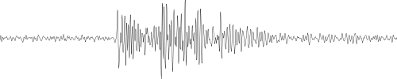
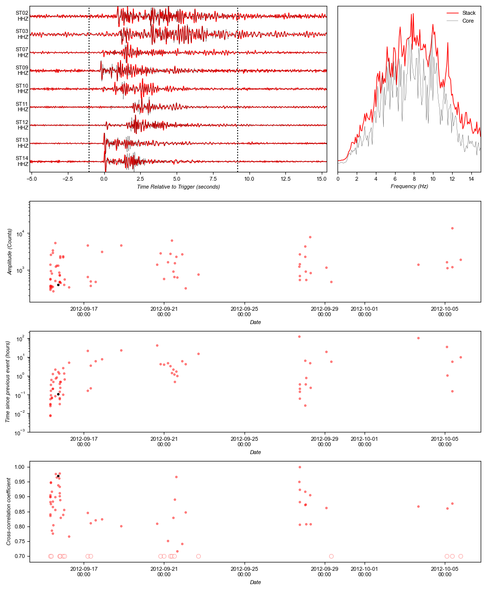

| Cluster 1 >
Cluster 0

Number of events: 77
Longevity: 20.45 days
Mean event spacing: 6.46 hours
Median event spacing: 0.71 hours
Mean Frequency Index: 0.67
First event: 2012-09-15T07:46:48.130000
Core event: 2012-09-15T19:46:34.360000
Last event: 2012-10-05T18:31:57.460000
